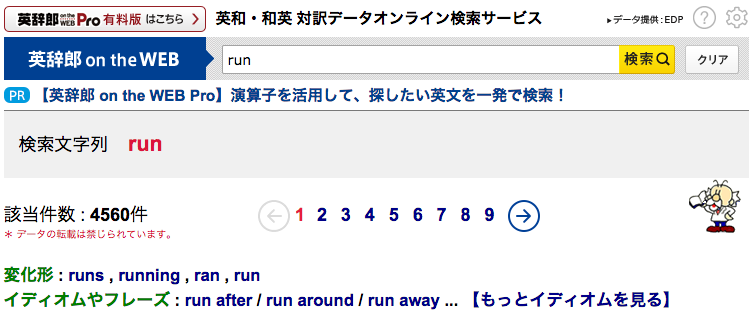
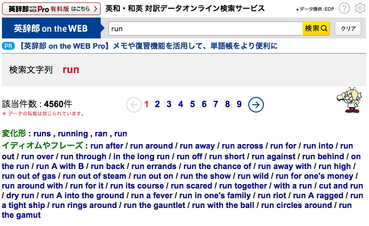

【Tip】イディオム検索機能を使って、表現力を豊かにしよう
■ 「英辞郎 on the WEB」に、イディオムやフレーズの簡易検索機能が導入されました。
特定の単語を検索したときに、その単語の含まれるイディオムや、慣用的なフレーズをリストアップし、そのイディオムやフレーズを用いた項目※へのショートカットとして利用することのできる機能です。
単語の検索の間にイディオムや慣用表現も参照して、英語表現力向上にお役立てください。● イディオムや慣用的なフレーズのショートカットは、検索キーワード入力欄の下に表示されます。「読みかな」や「ワードリンク」などのスイッチの下に、「イディオムやフレーズ」という見出しで表示されます（下図参照）。

この図は、検索キーワードが run だった場合の結果をキャプチャーしたものです。このキーワードの場合、run after、run around、run away ……という 3 種類のイディオムやフレーズが表示されています。これらの項目は、それぞれリンクになっていて、クリックすると、そのイディオムやフレーズを用いた項目※を「英辞郎 on the WEB」の英和データから検索することができます（“run after” の場合の結果を確認）。初期表示では、最大 3 つのイディオムやフレーズを確認することができます。
検索キーワードによっては、そのキーワードを使ったイディオムやフレーズが 3 つ以上存在する場合もあります。そのときは、【もっとイディオムを見る】をクリックしてください。すると、初期表示されていたもの以外のイディオムやフレーズも確認することができます（下図参照）。

● ここで表示されるイディオムやフレーズは、アルクが、これまで蓄積してきたさまざまな英文データと、多数の貴重な先行資料をもとに、日本人の学習者にとって有益であると思われるものを 6000 アイテムピックアップして、まとめあげた SIL（Standard Idiom List：標準熟語水準 6000）をベースにしています。
ここで扱うイディオムやフレーズには、単に熟語・慣用表現・成句だけでなく、2 語以上の基本的フレーズ、構文、動詞句、語法、コロケーション、名詞句なども含まれています。ネイティブスピーカーの「使用頻度」をベースにしながら、日本人英語学習者にとっての「有用性」「重要度」を考慮して熟語の選定をおこなっています。
● ここで扱うイディオムには、do one's best のように、my や your、his などの所有格を汎用的な one's で代用している場合もありますが、ショートカットをクリックしたときには、自動的に my や your、his なども含んだ形での検索を実行しますので、「英辞郎 on the WEB」に収録されている多彩な文例などもあわせて検索できるようになっています。例えば、do one's best は、
"do (one's | my | your | its | his | her | our | their) best"（“do one's best” の場合の結果を確認）※- "[do] (one's | my | your | its | his | her | our | their) best"（“do one's best” の場合の結果を確認）
※ 2009/05/26 リリースの変化形検索に対応して、do は、[do] に変換され、do、does、doing、did、done のいずれかを含むキーワードと解釈されて、検索を実行します。これによりいままでは検索できなかった I'm doing my best. や He obviously did his best to put a good face on the matter. といった例文が検索できるようになりました。
（変化形検索についての詳しい説明は、こちらをご覧ください）
その他の自動変換の例を紹介しておきます（ケースバイケースでのチューニングもあります）。
- one's / someone's ⇒ one's | my | your | its | his | her | our | their などに変換
- someone / A ⇒ someone | me | you | it | him | her | us | them などに変換
※ 注意事項：
イディオムやフレーズのショートカット機能は、イディオムやフレーズを構成する単語の規則的な組み合わせをベースにしたパターンで検索するものなので、検索結果にそのイディオムやフレーズとは関係ない（ただし、パターンとしてはマッチしている）項目（「ノイズ」と呼びます）も表示されることがあります。できるだけ、ノイズが低減するように検索キーワードを調整していますが、ノイズの混在の可能性もあることをあらかじめご了承ください。
イディオムやフレーズのショートカット機能は、イディオムやフレーズを構成する単語の規則的な組み合わせをベースにしたパターンで検索するものなので、検索結果にそのイディオムやフレーズとは関係ない（ただし、パターンとしてはマッチしている）項目（「ノイズ」と呼びます）も表示されることがあります。できるだけ、ノイズが低減するように検索キーワードを調整していますが、ノイズの混在の可能性もあることをあらかじめご了承ください。